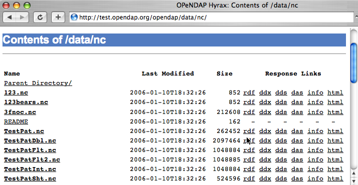
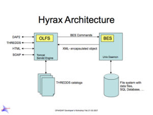

1. About This Guide
This guide introduces important concepts behind the OPeNDAP data model and transmission format as well as the clients and servers that use them. While it is not a reference for any particular client or server, you will find links to particluar clients and servers in it.
1.1. What is OPeNDAP
OPeNDAP provides a way for researchers to access scientific data anywhere on the Internet, from a wide variety of new and existing programs.
It is used widely in earth-science research settings but it is not limited to that. Using a flexible data model and a well-defined transmission format, an OPeNDAP client can request data from a wide variety of OPeNDAP servers, allowing researchers to enjoy flexibility similar to the flexibility of the web.
| There are different implementations of OPeNDAP produced by various open source organizations. This guide covers the implementation of OPeNDAP produced by the OPeNDAP group. |
The OPeNDAP architecture uses a client/server model, with a client that sends requests for data out onto the network to a server, that answers with the requested data. This is the same model used by the World Wide Web where client browsers submit requests to web servers for the data that compose web pages. Using flexible, multi-purpose data types, including scientific data, OPeNDAP servers deliver real data directly to client programs in the format needed by that client. OPeNDAP can return data in the following formats: NetCDF, GeoTIFF, JPEG2000, JSON, ASCII.
OPeNDAP clients are very specialized browsers, constructed by linking legacy data analysis programs with OPeNDAP-enabled versions of the data access APIs they use or by modifying programs to use one of the OPeNDAP data access APIs. In addition to providing a sophisticated set of network-compatible APIs in several languages, there are also libraries of legacy APIs available in OPeNDAP-aware versions. The popular NetCDF library, for example, can read data from remote OPeNDAP data sources as easily as it reads from a local file.
To expand the universe of data available to a user, OPeNDAP incorporates a powerful data translation facility, so that data may be stored in data structures and formats that are defined by the data provider but can be accessed by the users just like they access of local data files on the user’s own system. Alhough there are limitations on the types of data that may be translated (see Translation), the facility is flexible and general enough to handle many translations. The upshot of this is…
-
A user may not need to know that data from one set are stored in a format different from data in another set. Also, it may be possible that neither data set is stored in a format readable by the original version of the data analysis and display program he or she uses.
-
No segment of OPeNDAP users will be cut off from accessing data because of its storage format. A scientist who wants to make his or her data available to other OPeNDAP users may do so while keeping that data in what may be even a highly idiosyncratic storage format.
The combination of the OPeNDAP network communication model and the data translation facility make OPeNDAP a powerful tool for the retrieval, sampling, and display of large distributed datasets. Although OPeNDAP was developed by oceanographers, its application is not limited to oceanographic data. The organizing principles and algorithms may be applied to many other fields.
The uniformity with which data appears, which makes the system useful for data analysis, also enables you to automate data transport and manipulation tasks. For example, NOAA’s Live Access Server (LAS) (see, for example, http://mynasadata.larc.nasa.gov/data.html) uses OPeNDAP, as do many of the real-time observing systems that make up the Integrated Ocean Observing System (IOOS), such as the Gulf of Maine Ocean Observing System (GoMOOS).
Users who may be interested in OPeNDAP may be divided into data consumers and data providers (and these two roles are often assumed by the same scientists). The remainder of this guide is organized around this distinction between classes of users.
1.2. The OPeNDAP Client/Server
OPeNDAP uses a client/server model. The OPeNDAP servers are web servers equipped to interpret an OPeNDAP URL sent to them. An OPeNDAP client composes and sends messages to those servers. There are standalone OPeNDAP clients, but most clients are constructed from data analysis programs that are modified to get their data remotely, from the internet, rather than locally, from a file.
Without OPeNDAP, a program that uses one of the common data access APIs (such as netCDF) operates as shown in The Architecture of a Data Analysis Package figure, shown below. Here is how it works: The user makes a request for data from the program; the program uses a data access API to read and write data; the program uses procedures defined by that API to access the data, which is typically stored on the same host machine. Some APIs are somewhat more sophisticated than this, but their general operation is similar.

The operation of an OPeNDAP client is illustrated in the The Architecture of a Data Analysis Package Using OPeNDAP figure, shown below. Here, the same program that was used in The Architecture of a Data Analysis Package figure (above) has been modified to use one of the OPeNDAP API libraries. Now, in addition to being able to use local data as before, the program is able to access data from OPeNDAP servers anywhere on the internet just as it would local data.
To make any analysis program into an OPeNDAP client, it just needs to be linked with the OPeNDAP API library. (Or, if your program uses one of the supported legacy API libraries, like netCDF, you can link with the OPeNDAP version of that library.) This will create a program that accepts URLs as well as file pathnames to identify needed data. (See the OPeNDAP Client).

OPeNDAP also provides data translation functionality. Data from the original data file is translated by the OPeNDAP server into the OPeNDAP data model for transmission to the client. Upon receiving the data, the client translates the data into the data model it understands. Because the data transmitted from an OPeNDAP server to the client travel in the OPeNDAP format, the dataset’s original storage format is completely irrelevant to the client. For example, if the client was originally designed to read netCDF format files, the data returned by the OPeNDAP-netCDF library will appear to have been read from a netCDF file. Similarly, if the program expects JGOFS data, the OPeNDAP-JGOFS library will return data that seem to have come from a JGOFS dataset, and so on.
OPeNDAP does not claim to remove all of the overhead of data searches. A user will still have to keep track of the URLs of interesting data in the same way a user must now keep track of the names of files. (You may run across datasets where the data consists of OPeNDAP URLs. These are the OPeNDAP file servers and have been developed by OPeNDAP users to organize datasets consisting of large numbers of individual files.) But OPeNDAP does make the access to that data simpler and quicker.
The OPeNDAP group provides a whole array of client software to implement this communication standard. These range from standalone clients to libraries to link with existing software.
1.3. OPeNDAP Services
The communication between an OPeNDAP client and server is specified by the Data Access Protocol (DAP). This defines the range of messages a server must understand and the kinds of replies it makes.
There are two categories of messages that an OPeNDAP server can understand. Some are required by the DAP and others are merely suggested. A server is considered to be DAP-compliant if it can respond intelligibly to the required messages. Following are the requests messages a server is required to understand:
- Data Description
-
Data values come in types and sizes. An array, for example, might consist of 10 integers. The value "ten" and the type "integer" describe the array. This request returns information about data types, so that a receiving program can allocate space appropriately. See Data Description Structure (DDS).
- Data Attribute
-
This is a request to provide information about data and typically includes information like units, names of data types, reference information and so on. See Data Attribute Structure (DAS).
- Data
-
The server also must be able to respond to a request for the data itself. See data response.
In addition, a server may respond to requests like these:
- ASCII
-
Some servers can convert data to ASCII values on the fly. This allows users to view data using a standard web browser, assuming the data are not too large. See ASCII return.
- Info
-
The info response is a formatted page containing information from the Data Attributes and Data Description responses. It is meant to be a human-readable means to show what is available in a dataset via a standard web browser. See Info response.
- HTML
-
Very similar to the info response, the HTML response provides the information from the info response and also includes a Javascript form to help you build a request for data from the same data file. The best description of the HTML form is in the Quick Start Guide.
- SOAP
-
OPeNDAP servers can provide their data in terms of a SOAP request and response. For more information see SOAP Request.
- DDX
-
The DDX is an XML version of the Data Attribute and Data Description replies. See DDX Request.
1.4. The OPeNDAP Server (Hyrax)
OPeNDAP provides a definition of the communication between client and server and enables servers and clients that conform to DAP standard to communicate with each other. In addition to the DAP communication standard itself, the OPeNDAP group also provides an implementation of a standard server protocol, called Hyrax.
The OPeNDAP data server is made up of two pieces. You can think of them as a front-end and a back-end, though a client will not be aware of the separation. They will often be run on the same machine, and even when they are not, a client will see only the front end.
-
The front-end server is a Tomcat servlet and is also called the OPeNDAP Lightweight Front-End Servlet (OLFS). Its job is to receive your request for data and manage all the different forms a request might take. For example, you might be asking for the data, an ASCII version of the data, or a reply to a SOAP message looking for data. The front-end server can also reply to THREDDS catalog requests, for information about the data, and can directly provide some information about the data, too.
-
The Back-End Server (BES) is more strictly about performance and is designed to respond quickly and efficiently to requests from the OLFS. It is a pure data server and has only one format of request and response, relying on the OLFS to convert messages to whatever format the user needs.
| Most users will not make requests directly to the BES. |

Hyrax is an alternative name for the OPeNDAP 4 Data Server.
See Data Model for a description of the data returned by requests and see OPeNDAP Server for a description of the URL syntax used to send requests.
See the OPeNDAP 4 Data Server documentation for a description of how to install and configure an OPeNDAP data server (Hyrax).
1.5. Administration and Centralization of Data
Under OPeNDAP, there is no central archive of data. Data under OPeNDAP is organized similar to the World Wide Web. To make your data accessable, all that you need to do is to start up a properly configured server on an Internet node that has access to the data to be served. Data providers are free to join and to leave the system as doing so is convenient, just as any proprietor of a web page is free to delete it or add to it as needed.
Similar to the World Wide Web, there are some disadvantages to the lack of central authority. If no one knows about a web site, no one will visit it. Similarly, listing a dataset in a central data catalog, such as the Global Change Master Directory (http://gcmd.gsfc.nasa.gov/), can make data available to other researchers in a way that simply configuring an OPeNDAP server would not. OPeNDAP provided a facility for registering a data set with the GCMD catalog. This makes the data set known to the OPeNDAP data location service. The THREDDS catalog service is another way to make information about your data widely available.
The remainder of this section will be divided into three sections:
-
Instructions on the building and operating of OPeNDAP clients
-
A tutorial and reference on running OPeNDAP servers and making data available to OPeNDAP clients
-
A technical documentation describing the implementation details (and the motivation behind many of the design decisions) of the OPeNDAP software.
2. OPeNDAP Data Model
This section provides a review of the data types OPeNDAP sends between client and server and issues involved in translating one to another. This information may be useful to researchers who will be using OPeNDAP to transfer data.
2.1. Data and Data Models
Basic to the operation of OPeNDAP is its data model and the set of messages that define the communication between client and server. This section presents the data model (the next section presents the messages).
2.1.1. Data Models
Any data set is made up of data and a data model. The data model defines the type and arrangement of data values and may be thought of as an abstract representation of the relationship between one data value and another. Although it may seem paradoxical, it is precisely this relationship that defines the meaning of a number. Without the context provided by a data model, a number does not represent anything. For example, within some data set, it may be apparent that a number represents the value of temperature at some point in space and time. Without its neighboring temperature measurements, and without the latitude, longitude, height (or depth), and time, the same number is meaningless.
As the model only defines an abstract set of relationships, two data sets containing different data may share the same data model. For example, the data produced by two different measurements with the same instrument will use the same data model, though the values of the data are different. Sometimes two models may be equivalent. For example, an XBT (eXpendable BathyThermograph) measures a time series of temperature near the surface of the ocean, but is usually stored as a series of temperature and depth measurements. The temperature vs. time model of the original data is equivalent to the temperature vs. depth model of the stored data.
In a computational sense, a data model may be considered to be the data type or collection of data types used to represent that data. A temperature measurement might occur as half an entry in a sequence of temperature and depth pairs. However the data model also includes the scalar latitude, longitude, and date that identify the time and place where the temperature measurements were taken. Thus the data set might be represented in a C-like syntax like this:
Dataset {
Float64 lat;
Float64 lon;
Int32 minutes;
Int32 day;
Int32 year;
Sequence {
Float64 depth;
Float64 temperature;
} cast;
} xbt-station;
The above example describes a data set that contains all the data from a single XBT. The data set is called xbt-station and contains floating-point representations of the latitude and longitude of the station and three integers that specify when the XBT measurements were made. The xbt-station contains a single sequence (called cast) of measurements, which are represented here as values for depth and temperature.
A slightly different data model representing the same data might look like this:
Dataset {
Structure {
Float64 lat;
Float64 lon;
} location;
Structure {
Int32 minutes;
Int32 day;
Int32 year;
} time;
Sequence {
Float64 depth;
Float64 temperature;
} cast;
} xbt-station;
In this example, some of the data have been grouped, implying a relation between them. The nature of the relationship is not defined, but it is clear that lat and lon are both components of location and that each measurement in the cast sequence is made up of depth and temperature values.
In these two examples, meaning was added to the data set only by providing a more refined context for the data values. No other data was added, but the second example can be said to contain more information than the first one.
These two examples are refinements of the same basic arrangement of data. However, there is nothing that says that a completely different data model can not be just as useful or just as accurate. For example, the depth and temperature data, instead of being represented by a sequence of pairs could be represented by a pair of sequences or arrays:
Dataset {
Structure {
Float64 lat;
Float64 lon;
} location;
Structure {
Int32 minutes;
Int32 day;
Int32 year;
} time;
Float64 depth[500];
Float64 temperature[500];
} xbt-station;
The relationship between the depth and temperature variables is no longer quite as clear, but depending on what sort of processing is intended, the loss may be unimportant.
The choice of a computational data model to contain a data set depends in many cases on the whims and preferences of the user as well as on the data analysis software to be used. Several different data models may be equally useful for a given task and not all data models will contain the same quantity of informaiton.
Note that with a carefully chosen set of data type constructors, such as those we have used in the preceding examples, a user can implement an infinite number of data models. The examples above use the OPeNDAP Dataset Descriptor Structure (DDS) format, which will become important in later discussions of the details of the OPeNDAP Data Access Protocol. The precise details of the DDS syntax are described in DDS.
Data Models and APIs
A data access Application Program Interface (API) is a library of functions designed to be used by a computer program to read, write, and sample data. Any given data access API can be said to implicitly define a data model. (Or, at least, it will define restrictions on the data model.) That is, the functions that compose the API accept and return data using a certain collection of computational data types: multi-dimensional arrays might be required for some data, scalars for others, and sequences for others. This collection of data types and their use constitute the data model represented by that API. (Or data models—there is no reason an API cannot accommodate several different models.)
Translating Data Models
The problem of data model translation is central to the implementation of OPeNDAP. With an effective data translator, an OPeNDAP program originally designed to read netCDF data can have some access to data sets that use an incompatible data model, such as JGOFS.
In general, it is not possible to define an algorithm that will translate data from any model to any other model without losing information defined by the position of data values or the relations between them. Some of these incompatibilities are obvious. For example, a data model designed for time series data may not be able to accommodate multi-dimensional arrays. Others are more subtle. For example, a Sequence looks very similar to a collection of Arrays in many respects, but this does not mean they can always be translated from one to the other. For example, some APIs return only one Sequence "instance" at a time. This means that even if a Sequence of sets of three numbers is more or less the same shape as three parallel Arrays, it will be very difficult to model the one kind of behavior on the other kind of API.
However, even though the general problem is not solvable, there are many useful translations that can be done and there are many others that are still useful despite their inherent information loss.
For example, consider a relational structure below, which contains two nested Sequences. The outer sequence represents all the XBT drops in a cruise; the inner sequence represents each XBT drop. The JGOFS API was designed to use this sort of data type.
Dataset {
Sequence {
Int32 id;
Float64 latitude;
Float64 longitude;
Sequence {
Float64 depth;
Float64 temperature;
} xbt_drop;
} station;
} cruise;
Note that each entry in the cruise sequence is composed of a tuple of data values (one of which is itself a sequence). Were we to arrange these data values as a table, they might look like this:
id lat lon depth temp
1 10.8 60.8 0 70
10 46
20 34
2 11.2 61.0 0 71
10 45
20 34
3 11.6 61.2 0 69
10 47
20 34
This can be made into an array, although doing so introduces redundancy:
id lat lon depth temp 1 10.8 60.8 0 70 1 10.8 60.8 10 46 1 10.8 60.8 20 34 2 11.2 61.0 0 71 2 11.2 61.0 10 45 2 11.2 61.0 20 34 3 11.6 61.2 0 69 3 11.6 61.2 10 47 3 11.6 61.2 20 34
The data is now in a form that may be read by an API such as netCDF. However, consider the analysis stage. Suppose a user wants to see graphs of each station’s data. It is not obvious simply from the arrangement of the array where one station stops and the next one begins. Analyzing data in this format is not a function likely to be accommodated by a program that uses the netCDF API, even though it is theoretically possible to implement.
2.1.2. Data Access Protocol (DAP)
The OPeNDAP Data Access Protocol defines how an OPeNDAP client and an OPeNDAP server communicate with one another to pass data from the server to the client. The job of the functions in the OPeNDAP client library is to translate data from the DAP into the form expected by the data access API for which the OPeNDAP library is substituting. The job of an OPeNDAP server is to translate data stored on a disk (in whatever format they happen to be stored in) to the DAP for transmission to the client.
The DAP consists of several components:
-
An "intermediate data representation" for data sets. This is used to transport data from the remote source to the client. The data types that make up this representation may be thought of as the OPeNDAP data model.
-
A format for the "ancillary data" needed to translate a data set into the intermediate representation and to translate the intermediate representation into the target data model. The ancillary data in turn consists of two pieces:
-
A description of the shape and size of the various data types stored in some given data set. This is called the Data Description Structure (DDS).
-
Capsule descriptions of some of the properties of the data stored in some given data set. This is the Data Attribute Structure (DAS).
-
-
A "procedure" for retrieving data and ancillary data from remote platforms.
-
An "API" consisting of OPeNDAP classes and data access calls designed to implement the protocol,
The intermediate data representation and the ancillary data formats are introduced in OPeNDAP Messages, as are the steps of the procedure. The actual details of the software used to implement these formats and procedures is a subject of the documentation of the respective software.
2.1.3. Data Representation
There are many popular data storage formats, and many more than that in use. When these formats are optimized, they are optimized for data storage and are not generally suitable for data transmission. In order to transmit data over the Internet, OPeNDAP must translate the data model used by a particular storage format into the data model used for transmission.
If the data model for transmission is defined to be general enough to encompass the abstractions of several data models for storage, then this intermediate representation—the transmission format—can be used to translate between one data model and another.
The OPeNDAP data model consists of a fairly elementary set of base types combined with an advanced set of constructs and operators that allows it to define data types of arbitrary complexity. This way, the OPeNDAP data access protocol can be used to transmit data from virtually any data storage format.
OPeNDAP comprises the following elements:
- Base Types
-
These are the simple data types, like integers, floating point numbers, strings, and character data.
- Constructor
-
Types These are the more complex data types that can be constructed from the simple base types. Examples are structures, sequences, arrays, and grids.
- Operators
-
Access to data can be operationally defined with operators defined on the various data types.
- External Data Representation
-
In order to transmit the data across the Internet, there needs to be a machine-independent definition of what the various data types look like. For example, the client and server need to agree on the most significant digit of a particular byte in the message
These elements are defined in greater detail in the sections that follow.
Base Types
The OPeNDAP data model uses the concepts of variables and operators. Each data set is defined by a set of one or more variables, and each variable is defined by a set of attributes. A variable’s attributes—such as units, name and type—must not be confused with the data value (or values) that may be represented by that variable. A variable called time may contain an integer number of minutes, but it does not contain a particular number of minutes until a context, such as a specific event recorded in a data set, is provided. Each variable may further be the object of an operator that defines a subset of the available data set.
Variables in the DAP have two forms. They are either base types or type constructors. Base type variables are similar to predefined variables in procedural programming languages like C or Fortran (such as int or integer*4). While these have an internal structure, it is not possible to access parts of that structure using the DAP. Base type variables in the DAP have two predefined attributes (or characteristics): name and type. They are defined as follows:
- Name
-
A unique identifier that can be used to reference the part of the dataset associated with this variable.
- Type
-
The data type contained by the variable. Data types include the following:
-
Byte is a single byte of data. This is the same as unsigned char in ANSI C.
-
Int16 is a 16 bit two’s complement integer. This is synonymous with long in ANSI C when that type is implemented as 16 bits.
-
UInt16 is a 16 bit unsigned integer.
-
Int32 is a 32 bit two’s complement integer. This is synonymous with long in ANSI C when that type is implemented as 32 bits.
-
UInt32 is a 32 bit unsigned integer.
-
Float32 is the IEEE 32 bit floating point data type.
-
Float64 is the IEEE 64 bit floating point data type.
-
String is a sequence of bytes terminated by a null character.
-
Url is a string containing an OPeNDAP URL.
-
The declaration in a DDS of a variable of any of the base types is simply the type of the variable followed by its name and a semicolon. For example, to declare a month variable to be a 32-bit integer, you would type…
Int32 month;
Constructor Types
Constructor types, such as arrays and structures, describe the grouping of one or more variables within a dataset. These classes are used to describe different types of relations between the variables that comprise the dataset. For example, an array might indicate that the variables grouped are all measurements of the same quantity with some spatial relation to one another, whereas a structure might indicate a grouping of measurements of disparate quantities that happened at the same place and time.
There are six classes of type constructor variables defined by OPeNDAP: arrays, structures, sequences, functions, and grids. These are explained below.
An array is a one dimensional indexed data structure as defined by ANSI C. Multidimensional arrays are defined as arrays of arrays. An array may be subsampled using subscripts or ranges of subscripts enclosed in brackets ([]). For example, temp[3][4] would indicate the value in the fourth row and fifth column of the temp array. (As in C, OPeNDAP array indices start at zero.)
A chunk of an array may be specified with subscript ranges; the array temp[2:10][3:4] indicates an array of nine rows and two columns whose values have been lifted intact from the larger temp array.
| A hyperslab may be selected from an array with a stride value. The array represented by temp[2:2:10][3:4] would have only five rows; the middle value in the first subscript range indicates that the output array values are to be selected from alternate input array rows. The array temp[2:3:10][3:4] would select from every third row, and so on. |
A DDS declaration of a 5x6 array of floating point numbers would look like this:
Float64 data[5][6];
In addition to its magnitude, every dimension of an array may also have a name. The previous declaration could be written as…
Float64 data[height = 5][width = 6];
A Structure is a class that may contain several variables of different classes. However, though it implies that its member variables are related somehow, it conveys no relational information about them. The structure type can also be used to group a set of unrelated variables together into a single dataset. The "dataset" class name is a synonym for structure.
A DDS Structure declaration containing some data and the month in which the data was taken might look like this:
Structure {
Int32 month;
Float64 data[5][6];
} measurement;
Use the . operator to refer to members of a Structure. For example, measurement.month would identify the integer member of the Structure defined in the above declaration.
A Sequence is an ordered set of variables, each of which may have several values. The variables may be of different classes. Each element of a Sequence consists of a value for each member variable, so a Sequence is sort of like an ordered set of Structures.
Thus a Sequence can be represented as…
s00 |
s01 |
… |
s0n |
s10 |
s11 |
… |
s1n |
s20 |
s21 |
… |
s2n |
. |
… |
… |
. |
. |
… |
… |
. |
. |
… |
… |
. |
si0 |
si1 |
… |
sin |
Every instance of Sequence S has the same number, order, and class of its member variables. A Sequence implies that each of the variables is related to each other in some logical way. For example, a Sequence containing position and temperature measurements might imply that each temperature measurement was taken at the corresponding position. A Sequence is different from a Structure because its constituent variables have several instances while a Structure’s variables have only one instance (or value).
A Sequence declaration is similar to a Structure’s declaration. For example, the following would define a Sequence that would contain many members like the Structure defined above:
Sequence {
Int32 month;
Float64 data[5][6];
} measurement;
Note that, unlike an Array, a Sequence has no index. This means that a Sequence’s values are not simultaneously accessible. Instead, a Sequence has an implied state, corresponding to a single element in the Sequence.
As with a Structure, the variable measurement.month has a single value. The distinction is that this variable’s value changes depending on the state of the Sequence. You can think of a Sequence as composed of the data you get from successive reads of data from a file. The data values available at any point are the last values read from the file, and you will not have immediate access to any of the other values in that file.
A Grid is an association of an N dimensional array with N named vectors (one-dimensional arrays), each of which has the same number of elements as the corresponding dimension of the array. Each data value in the Grid is associated with the data values in the vectors associated with its dimensions.
For example, consider an array of temperature values that has six columns and five rows. Suppose that this array represents measurements of temperature at five different depths in six different locations. The problem is the indication of the precise location of each temperature measurement, relative to one another.
If the six locations are evenly spaced, and the five depths are also evenly spaced, then the data set can be completely described using the array and two scalar values indicating the distance between adjacent vertices of the array. However, if the spacing of the measurements is not regular, as in the figure below, then an array will be inadequate. To adequately describe the positions of each of the points in the grid, the precise location of each column and row must be described.

The secondary vectors in the Grid data type provide a solution to this problem. Each member of these vectors associates a value for all the data points in the corresponding rank of the array. The value can represent location or time or some other quantity and can even be a constructor data type. The following declaration would define a data type that could accommodate a structure like this:
Grid {
Float64 data[distance = 6][depth = 5];
Float64 distance[6];
Float64 depth[5];
} measurement;
In this example, a vector called depth contains five values, each corresponding to the depths of each row of the array, while another vector called distance contains the scalar distance between the location of the corresponding column and a reference point.
In a similar arrangement, a location array could contain six (latitude, longitude) pairs indicating the absolute location of each column of the grid.
Grid {
Float64 data[distance = 6][depth = 5];
Float64 depth[5];
Array Structure {
Float64 latitude;
Float64 longitude;
} location[6];
} measurement;
External Data Representation
Now that you know what the data types are, the next step is to define their external representation. The data access protocol defines an external representation for each of the base-type and constructor-type variables. This is used when an object of the given type is transferred from one computer to another. Defining a single external representation makes possible the translation of variables from one computer to another when those computers use different internal representations for those variable types.
The data access protocol uses Sun Microsystems' XDR protocol for the external representation of all of the base type variables. The table below shows the XDR types used to represent the various base type variables.
The XDR data types corresponding to OPeNDAP base-type variables.
| Base Type | XDR Type |
|---|---|
Byte |
xdr byte |
Int16 |
xdr int16 |
UInt16 |
xdr unsigned int16 |
Int32 |
xdr int32 |
UInt32 |
xdr unsigned int32 |
Float32 |
xdr float |
Float64 |
xdr double |
String |
xdr string |
URL |
xdr string |
A base type variable is always either transmitted or not. You will not see a fraction of an String type transmitted. Constructor type variables, being composed of the bast type variables, are transmitted as sets of base type variables, and these may be sampled, with a constraint expression.
Constraint expressions do not affect how a base-type variable is transmitted from a client to a server; they determine if a variable is to be transmitted. For constructor type variables, however, constraint expressions may be used to exclude portions of the variable. For example, if a constraint expression is used to select the first three of six fields in a structure, the last three fields of that structure are not transmitted by the server.
What remains is to define the external representation of the constructor type variables. For each of the six constructor types these definitions are:
- Array
-
An Array is sent using the xdr_array function. This means that an Array of 100 Int32s is sent as a single block of 100 xdr longs, not 100 separate "xdr long"s.
- Structure
-
A Structure is sent by encoding each field in the order those fields are declared in the DDS and transmitting the resulting block of bytes.
- Sequence
-
A Sequence is transmitted by encoding each item in the sequence as if it were a Structure, and ending each such structure after the other, in the order of their occurrence in the sequence. The entire sequence is sent, subject to the constraint expression. In other words, if no constraint expression is supplied then the entire sequence is sent. However, if a constraint expression is given all the records in the sequence that satisfy the expression are sent.
- Grid
-
A Grid is encoded as if it were a Structure (one component after the other, in the order of their declaration).
The external data representation used by OPeNDAP may be compressed, depending on the configuration of the respective machines. The compression is done using the gzip program. Only the data transmission itself will be affected by this; the transmission of the ancillary data is not compressed.
3. OPeNDAP Messages
This section provides A closer look at the messages passed to and from an OPeNDAP server and the various services that may be provided. Also reviews constraint expressions, which can be used to select data from specific datasets. Researchers who will use OPeNDAP to get data for analysis will find this useful.
3.1. The OPeNDAP Messages
An OPeNDAP server is in the business of making replies to queries for data and other services. The queries come in the form of specially formed URLs, and the replies consist of MIME documents whose contents are described in the sections below. (Technically speaking, the response document headers are not exactly right, but they function in the same way.)
All the requests start with a root URL, and they all are in the form of a GET, using a suffix on the root URL and a constraint expression to indicate which service is requested and what the parameters are.
(There is also an experimental SOAP interface that uses a POST to request data.)
The replies come in three categories: Ancillary data, Data, and the other services. The following sections cover each of them, beginning with the ancillary data messages.
3.1.1. Ancillary Data
In order to use a data set, a user must have some information at his or her disposal that is not strictly included in the data itself. This information, called ancillary data, describes the shape and size of the data types that make up the data set, and provides information about many of the data set’s attributes. OPeNDAP uses two different structures to supply this ancillary information about an OPeNDAP data set. The Dataset Descriptor Structure (DDS) describes the data set’s structure and the relationships between its variables, and the Dataset Attribute Structure (DAS) provides information about the variables themselves. Both structures are described in the following sections.
Dataset Descriptor Structure (DDS)
In order to translate data from one data model into another, OPeNDAP must have some knowledge about the types of the variables and their semantics that comprise a given data set. It must also know something about the relations of those variables—even those relations which are only implicit in the dataset’s own API. This knowledge about the dataset’s structure is contained in a text description of the dataset called the "Dataset Description Structure" (DDS).
The DDS does not describe how the information in the data set is physically stored, nor does it describe how the "native" API is used to access that data. Those pieces of information are contained in the API itself and in the OPeNDAP server, respectively. The DDS contains knowledge about the dataset variables and the interrelations of those variables. The server uses the DDS to describe the structure of a particular dataset to a client.
The DDS is a textual description of the variables and their classes that make up some data set. The DDS syntax is based on the variable declaration and definition syntax of C and C++. A variable that is a member of one of the base type classes is declared by writing the class name followed by the variable name. The type constructor classes are declared using C’s brace notation. A grammar for the syntax is given in the table below. (Note that the Dataset keyword has the same syntactic function as Structure but is used for the specific job of enclosing the entire data set even when it does not technically need an enclosing element.)
| "data set | Dataset \{ declarations } name; |
|---|---|
"declaration |
List declaration |
"base-type" var; |
|
Structure \{"declarations"} "var"; |
|
Sequence \{"declarations"} "var"; |
|
Grid \{ ARRAY : "declaration" MAPS: "declarations" } "var"; |
|
"base-type" |
Byte |
Int32 |
|
UInt32 |
|
Float64 |
|
String |
|
Url |
|
"var" |
"name" |
"name array-decl" |
|
"array-decl" |
[integer ] |
["name" = integer] |
|
"name" |
User-chosen name of data set, variable, or array dimension. |
A DDS is returned in response to a request for the DDS, and it is also part of the data return. The request URL for the DDS is composed of the root URL, with the suffix ".dds". For example, if a data set is located at http:/tests.opendap.org/data/mydata.dat then you’ll find the DDS at http:/tests.opendap.org/data/mydata.dat.dds
An example DDS entry is shown below. (There are more in Data_Models, where there’s also an explanation of the information implied by the data model.)
Dataset {
Int32 catalog_number;
Sequence {
String experimenter;
Int32 time;
Structure {
Float64 latitude;
Float64 longitude;
} location;
Sequence {
Float64 depth;
Float64 salinity;
Float64 oxygen;
Float64 temperature;
} cast;
} station;
} data;
Dataset Attribute Structure (DAS)
The "Dataset Attribute Structure" (DAS) is used to store attributes for variables in the dataset. An attribute is any piece of information about a variable that the creator wants to bind with that variable excluding the type and size, which are part of the DDS. Typical attributes might range from error measurements to text describing how the data was collected or processed.
In principle, attributes are not processed by software, other than to be displayed. However, many systems rely on attributes to store extra information that is necessary to perform certain manipulations of data. In effect, attributes are used to store information that is used "by convention" rather than "by design". OPeNDAP can effectively support these conventions by passing the attributes from data set to user program via the DAS. (Of course, OPeNDAP cannot enforce conventions in datasets where they were not followed in the first place.)
The syntax for attributes in a DAS is shown in the table below. Every attribute of a variable is a triple: attribute name, type, and value. The name of an attribute is an identifier, consisting of alphanumeric characters, plus "_" and "/". The type of an attribute may be one of: "Byte", "Int32", "UInt32", "Float64", "String" or "Url". An attribute may be scalar or vector. In the latter case the values of the vector are separated by commas (,) in the textual representation of the DAS.
| "DAS" | Attributes "{var-attr-list}" |
|---|---|
"var-attr-list" |
"var-attr" |
"var-attr-list" "var-attr" |
|
(empty list) |
|
"var-attr" |
"variable" \{"attr-list"} |
"container" {var-attr-list} |
|
"global-attr" |
|
"global-attr" |
Global "variable" \{"attr-list"} |
"attr-list" |
attr-triple; |
"attr-list" "attr-triple" |
|
"(empty list)" |
|
"attr-triple" |
attr-type attribute attr-val-vec; |
"attr-val-vec" |
"attr-val" |
"attr-val-vec", "attr-val" |
|
"attr-val" |
numeric value |
"variable" |
|
"string" |
|
"attr-type" |
"Byte" |
Int32 |
|
UInt32 |
|
Float64 |
|
String |
|
Url |
|
"variable" |
user-chosen variable name |
"attribute" |
user-chosen attribute name |
"container" |
user-chosen container name |
A DAS is returned in response to a request for the DAS. Unlike the DDS, it is not part of the data return. The request URL for the DAS is composed of the root URL, with the suffix ".das". For example, if a data set is located at http:/tests.opendap.org/data/mydata.dat then you’ll find the DAS at http:/tests.opendap.org/data/mydata.dat.das
An attribute can contain another attribute, or a set of attributes. This is roughly comparable to the way compound variables can contain other variables in the DDS. The container defines a new lexical scope for the attributes it contains.
Consider the following example:
Attributes {
Bill {
String LastName "Evans";
Byte Age 53;
String DaughterName "Matilda";
Matilda {
String LastName "Fink";
Byte Age 26;
}
}
}
Here, the attribute Bill.LastName would be associated with the string "Evans", and Bill.Age with the number 53. However, the attribute Bill.Matilda.LastName would be associated with the string "Fink" and Bill.Matilda.Age with the number 26.
Using container attributes as above, you can construct a DAS that exactly mirrors the construction of a DDS that uses compound data types, like "Structure" and "Sequence". Note that though the Bill attribute is a container, it has attributes of its own, as well. This exactly corresponds to the situation where, for example, a "Sequence" would have attributes belonging to it, as well as attributes for each of its member variables. Suppose the Sequence represented a single time series of measurements, where several different data types are measured at each time. The Sequence attributes might be the time and location of the measurements, and the individual variables might have attributes describing the method or accuracy of that measurement.
A "global attribute" is not bound to a particular identifier in a dataset; these attributes are stored in one or more containers with the name Global or ending with _Global. Global attributes are used to describe attributes of an entire dataset. For example, a global attribute might contain the name of the satellite or ship from which the data was collected. Here’s an example:
Attributes {
Bill {
String LastName "Evans";
Byte Age 53;
String DaughterName "Matilda";
Matilda {
String LastName "Fink";
Byte Age 26;
}
}
Global {
String Name "FamilyData";
String DateCompiled "11/17/98";
}
}
Global attributes can be used to define a certain view of a dataset. For example, consider the following DAS:
Attributes {
CTD {
String Ship "Oceanus";
Temp {
String Name "Temperature";
}
Salt {
String Name "Salinity";
}
}
Global {
String Names "OPeNDAP";
}
FNO_Global {
String Names "FNO";
CTD {
Temp {
String FNOName "TEMPERATURE";
}
Salinity {
String FNOName "SALINITY";
}
}
}
}
Here, a dataset contains temperature and salinity measurements. To aid processing of this dataset by some OPeNDAP client, long names are supplied for the Temp and Salt variables. However, a different client (FNO) spells variable names differently. Since it is seldom practical to come up with general-purpose translation tables, the dataset administrator has chosen to include these synonyms under the FNO_Global attributes, as a convenience to those users.
Using global attributes, a dataset or catalog administrator can create a layer of attributes to make OPeNDAP datasets conform to several different dataset naming standards. This becomes significant when trying to compile an OPeNDAP dataset database.
3.1.2. Data Transmission
An OPeNDAP server returns data to a client in response to a request URL composed of the root URL, with the suffix ".dods". For example, if a data set is located at http:/tests.opendap.org/data/mydata.dat then you’ll find the data at http:/tests.opendap.org/data/mydata.dat.dods
The data is returned in a MIME document that consists of two parts: the DDS and the data encoded according to the description in External Data Representation. (The returned document is sometimes called the DataDDS.) The two parts are separated by this string:
Data:<CR><NL>
The DDS included is modified according to any constraint expression that may have been applied. That is, the returned DDS describes the returned data.
For example, consider a a request for data from a data set with a DDS like this:
Dataset {
Grid {
Array:
Int16 sst[time = 1857][lat = 89][lon = 180];
Maps:
Float64 time[time = 1857];
Float32 lat[lat = 89];
Float32 lon[lon = 180];
} sst;
Float64 time_bnds[time = 1857][nbnds = 2];
} sst.mnmean.nc;
This is the DDS of a typical gridded dataset. Suppose, though, that you ask for only the time values of the data set. The DDS of the result will look like this:
Dataset {
Float64 time[time = 1857];
} sst.mnmean.nc;
This DDS will be included in the DataDDS return, ahead of the encoded array of 1857 64-bit time values.
For more information about sampling OPeNDAP data sets, see the section below about constraint expressions.
| A request for data from an OPeNDAP client will generally make three different service requests, for data attributes (DAS), data descriptors (DDS), and data. The prepackaged OPeNDAP clients do this for you, so you may not be aware that three requests are made for each URL. |
3.1.3. Other Services
In addition to the data, DSS, and DAS, an OPeNDAP server may provide any or all of the services described in the sections that follow.
ASCII Service
This service returns an ASCII representation of the requested data. This can make the data available to a wide variety of standard web browsers. This service is activated when the server receives a URL ending with .asc or .ascii.
Note that unlike the data response, the ASCII response does not contain a DDS for the returned data. Instead it just returns the simple text message.
| While ASCII is fine for moving small amounts of data, it generally is best to move data in binary whenever possible becuase servers can generate binary data more quickly than ASCII data, and binary data is more compact. You can then process locally if you need ASCII. To process binary data, you could use getdap if you retrieve DAP2 binary response (.dods); getdap4 if you retrieve a DAP4 binary response; or ncdump for a NetCDF3 or NetCDF4 binary response. |
The Quick Start Guide contains examples of the ASCII response.
Info Service
The Info service formats information from a data set’s DAS and DDS into a single HTML document suitable for viewing in a web browser. The returned document may include information about both the data server itself (such as server functions implemented) and the dataset referenced in the URL. The server administrator determines what information is returned in response to such a request. The services is activated by a URL ending in .info.
Click http://test.opendap.org/dap/data/nc/sst.mnmean.nc.gz.info to see an Info response.
WWW Interface Service
The WWW service is another way to browse a server’s data interactively. You can use a browser to look at an individual data file, or a directory of files (or "files" since a server may contain logical entities that look like files).
The server uses a data set’s DDS and DAS to construct a web form you can use to construct a URL that subsamples the data set (using a constraint expression). You can copy the resulting URL into another browser, or use one of the buttons on the form to download data.

If a server receives a URL that either ends in a slash (/) or contents.html, it returns a web page that looks like a standard web browser’s directory view.

Each link in the directory view opens up the WWW service version of that data.
The Quick Start Guide contains more information about browsing OPeNDAP data interactively.
Version Service
This service returns the version information for the OPeNDAP server software running on the server. This service is triggered by a URL ending with .ver. The return is a short text message containing the relevant version numbers.
SOAP
The OPeNDAP server provided by the OPeNDAP group contains an experimental SOAP service, enabling users to make requests and get responses by exchanging SOAP XML documents. This is an experimental service, and if you’re writing an application depending on it, it’s best to contact the OPeNDAP developer team.
DDX
The DDX is an XML version of the DAS and DDS, combined. It is triggered by a URL ending with .ddx. You can find the schema for the DDX at http://xml.opendap.org/dap/dap2.xsd.
The DDX is designed to contain data, too, but this is not yet implemented. You will see an empty dataBLOB element at the end of each DDX, which will eventually hold returned data.
The DDX response can be modified with a constraint expression. Like the DDS, the DDX will describe only the data actually returned.
The DDX and the DataDDX (containing the dataBLOB) are the nucleus of what will become version 4 of the DAP.
THREDDS
Some OPeNDAP servers (including Hyrax, the server supplied by the OPeNDAP group) can make sensible replies to requests for THREDDS catalog information. This can serve to "advertise" a server’s data by having it appear in catalogs accumulated by THREDDS browsers. For more information about THREDDS, see the THREDDS home page.
3.2. Constraint Expressions
Using OPeNDAP, you can subsample the data you are looking at. That is, you can request an entire data file or just a small piece of it.
3.2.1. Selecting Data: Using Constraint Expressions
The URL such as this one…
http://test.opendap.org/dap/data/nc/sst.mnmean.nc.gz
…refers to the entire dataset contained in the mnmean.nc file. A user may also choose to sample the dataset simply by modifying the submitted URL. The constraint expression attached to the URL directs that the data set specified by the first part of the URL be sampled to select only the data of interest from a dataset.
Because the expression modifies the URL used to access data, this works even for programs that do not have a built-in way to accomplish such selections. This can vastly reduce the amount of data a program needs to process and thus reduce the network load of transmitting the given data to the client.
Constraint Expression Syntax
A constraint expression is appended to the target URL following a question mark, as in the following examples:
…/nc/sst.mnmean.nc.gz?sst[3][4][5] Click here for sample output.
…/nc/sst.mnmean.nc.gz?sst[0:1][13:16][103:105] Click here for sample output.
…/n…/ff/gsodock.dat?Time,Sea_Tempc/sst.mnmean.nc.gz?geogrid(sst,62,206,56,210,"19722<time<19755") Click here for sample output.
…/ff/gsodock.dat?Time,Sea_Temp Click here for sample output.
…/ff/gsodock.dat?Time,Sea_Temp&Time%3C35234.1 Click here for sample output.
…/ff/gsodock.dat?Time,Sea_Temp&Time%3C35234.1&Sea_Temp%3C18 Click here for sample input.
| An OPeNDAP data set can contain an extraordinary amount of data. You almost certainly do not want to make an unconstrained request to a data set without knowing something about it. Familiarize yourself with the DDS and DAS before asking for data. |
A constraint expression consists of two parts: a projection and a selection, separated by an ampersand (&). Either part may contain several sub-expressions. Either part or both parts may be used.
...?proj_1,proj_2,...,proj_n&sel_1&sel_2&...&sel_m
A projection is simply a comma-separated list of the variables that are to be returned to the client. If an array is to be subsampled, the projection specifies the manner in which the sampling is to be done. If the selection is omitted, all the variables in the projection list are returned. If the projection is omitted, the entire dataset is returned, subject to the evaluation of the selection expression. The projection can also include functional expressions of the form…
...?function(arg_1,arg_2,...,arg_n)
…where the arguments are variables from the dataset, scalar values, or other functions. (See Constraint Expression Functions below.)
A selection expression leads with an ampersand and is a boolean expression of the form "variable operator variable", "variable operator value" or "function(arg_1,arg_2,…,arg_n)", where…
- operator
-
Can be one of the relational operators listed in the table below.
- variable
-
Can be any variable recorded in the dataset.
- value
-
Can be any scalar, string, function, or list of numbers (Lists are denoted by comma-separated items enclosed in curly braces ,for example, \{3,11,4.5}.).
- function
-
Is a function defined by the server to operate on variables or values, and to return a boolean value.
Each selection clause begins with an ampersand (&). You can think of this as representing the "AND" boolean operation, but remember that it is actually a prefix operator, not an infix operator. That is, it must always appear at the beginning of each selection clause. This means that a constraint expression that contains no projection clause must still have an & in front of the first selection clause.
There is no limit on the number of selection clauses that can be combined to create a compound constraint expression. Data that produces a true (non-zero) value for the entire selection expression will be included in the data returned to the client by the server. If only a part of some data structure, such as a Sequence, satisfies the selection criteria, then only that part will be returned.
| Due to differences between data model paradigms, selection is not implemented for the OPeNDAP array data types, such as Grid or Array. However, many OPeNDAP servers implement selection functions you can use for the same effect. (See Constraint Expression Functions below for more information about functions.) |
Consider the DDS below. This is the description of a dataset containing station data including temperature, oxygen, and salinity. Each station also contains 20 oxygen data points, taken at 20 fixed depths, used for calibration of the data.
Dataset {
Sequence{
Int32 day;
Int32 month;
Int32 year;
Float64 lat;
Float64 lon;
Float64 O2cal[20];
Sequence{
Float64 press;
Float64 temp;
Float64 O2;
Float64 salt;
} cast;
String comments;
} station;
} arabian-sea;
The following URL will return only the pressure and temperature pairs of this dataset. (Note that the constraint expression parser removes all spaces, tabs, and newline characters before the expression is parsed.) There is only a projection clause, without a selection, in this constraint expression:
http://oceans.edu/jg/exp1O2/cruise?station.cast.press,station.cast.temp
We have assumed that the dataset was stored in the JGOFS format on the remote host oceans.edu, in a file called explO2/cruise. For the sake of brevity, from here on we will omit the first part of the URL so as to concentrate on only the constraint expression.
If we only want to see pressure and temperature pairs below 500 meters deep, we can modify the constraint expression by adding a selection clause:
?station.cast.press,station.cast.temp&station.cast.press>500.0
In order to retrieve all of each cast that has any temperature reading greater than 22 degrees, use the following:
?station.cast&station.cast.temp>22.0
Simple constraint expressions may be combined into compound expressions by appending them to one another. To retrieve all stations west of 60 degrees West and north of the equator:
?station&station.lat>0.0&station.lon<-60.0
As mentioned earler, the logical OR can be implemented using a list of scalars. The following expression will select only stations taken north of the equator in April, May, June, or July:
?station&station.lat>0.0&station.month={4,5,6,7}
If our dataset contained a field called monsoon-month, indicating the month in which monsoons happened that year, we could modify the last example search to include those months as follows:
?station&station.lat>O.O&station.month={4,5,6,7,station.monsoon-month}
In other words, a list can contain both values and other variables. If monsoon-month was itself a list of months, a search could be written as:
?station&station.lat>0.0&station.month=station.monsoon-month
For arrays and grids, there is a special way to select data within the projection clause. Suppose we want to see only the first five oxygen calibration points for each station. The constraint expression for this would be:
?station.02cal[0:4]
By specifying a stride value, we can also select a hyperslab of the oxygen calibration array:
?station.02cal[0:5:19]
This expression will return every fifth member of the 02cal array. In other words, the result will be a four-element array containing only the first, sixth, eleventh, and sixteenth members of the 02cal array. Each dimension of a multi-dimensional arrays may be subsampled in an analogous way. The return value is an array of the same number of dimensions as the sampled array, with each dimension size equal to the number of elements selected from it.
Operators, Special Functions, and Data Types
The constraint expression syntax defines a number of operators for each data type. These operators are listed below.
| All the operators defined for the scalar base types are boolean operators whose result depends on the specified comparison between its arguments. |
| Class | Operators |
|---|---|
Simple Types |
|
Byte, Int*, UInt*, Float* |
< > = != ⇐ >= |
String |
= != ~= |
URL |
= != ~= |
Compound Types |
|
Array |
[start:stop] [start:stride:stop] |
Structure |
. |
Sequence |
. |
Grid |
[start:stop] [start:stride:stop] . |
Individual fields of type constructors may be accessed using the dot (.) operator or the virtual file system syntax. If a structure s has two fields time and temperature, then those fields may be accessed using s.time and s.temperature or as s/time and s/temperature.
The ~= operator returns true when the character string on the left of the operator matches the regular expression on the right. See Pattern Matching with Constraint Expressions for a discussion of regular expressions.
The array operator [] is used to subsample the given array. You can find several examples of its use in the Quick Start Guide.
Constraint Expression Functions
An OPeNDAP data server may define its own set of functions that may be used in a constraint expression. For example, the oceans.edu data server we have been imagining might define a sigma1() function to return the density of the water at the given temperature, salinity, and pressure. A query like the following would return all the stations containing water samples whose density exceeded 1.0275g/cm3:
?station.cast&sigma1(station.cast.temp,
station.cast.salt,
station.cast.press)>27.5
Functions like this are not a standard part of the OPeNDAP architecture and may vary from one server to another. A user may query a server for a list of such functions by sending a URL with a constraint expression that calls the "version()" function.
This will return a list of functions implemented. Call any of the functions with no arguments to see a description of the arguments.
For example…
and…
| When using functions, remember that a function used in a projection can return any value, but when used in a selection clause, it must either return a boolean value, or be part of a test that returns a boolean value. |
Pattern Matching with Constraint Expressions
There are three operators defined to compare one String data type to another:
-
The = operator returns TRUE if its two input character strings are identical.
-
The != operator returns TRUE if the Strings do not match.
-
The ~= operator is provided that returns TRUE if the String to the left of the operator matches the regular expression in the String on the right.
A regular expression is simply a character string containing wildcard characters that allow it to match patterns within a longer string. For example, the following constraint expression might return all the stations on the sample cruise on which a shark was sighted:
?station&station.comment~=".*shark.*"
Most characters in a regular expression match themselves. That is, an "f" in a regular expression matches an "f" in the target string. There are several special characters, however, that provide more sophisticated pattern-matching capabilities.
- "."
-
The period matches any single character except a newline.
- * + ?
-
These are postfix operators, which indicate to try to match the preceding regular expression repetitively (as many times as possible). Thus, o* matches any number of o’s. The operators differ in that o* also matches zero o’s, o+ matches only a series of one or more o’s, and o? matches only zero or one o.
- "[ … ]"
-
Define a "character set," which begins with [ and is terminated by ]. In the simplest case, the characters between the two brackets are what this set can match. For example, [Ss] matches either an upper or lower case s. Brackets can also contain character ranges, so [0-9] matches all the numerals. If the first character within the brackets is a caret ( ), the expression will only match characters that do not appear in the brackets. For example, [ 0-9]* matches only character strings that contain no numerals.
- ^$
-
These are special characters that match the empty string at the beginning or end of a line.
- \|
-
These two characters define a logical OR between the largest possible expression on either side of the operator. So, for example, the string Endeavor\|Oceanus matches either Endeavor or Oceanus. The scope of the OR can be contained with the grouping operators, \( and \).
- \( \)
-
These are used to group a series of characters into an expression, or for the OR function. For example, \(abc\)* matches zero or more repetitions of the string abc2.
There are several more special characters and several other features of the characters described here, but they are beyond the scope of this guide. The OPeNDAP regular expression syntax is the same as that used in the Emacs editor. See the documentation for Emacs for a complete description of all the pattern- matching capabilities of regular expressions.
Optimizing the Query
Using the tools provided by OPeNDAP, a user can buil elaborate and sophisticated constraint expressions that will return precisely the data he or she wants. However, as the complexity of a constraint expression increases, so does the time necessary to process the expression. There are some techniques for optimizing the evaluation of a constraint that will ease the load on the server and provide faster replies to OPeNDAP dataset queries.
The OPeNDAP constraint expression evaluator uses a "lazy evaluation" algorithm. This means that the sub-clauses of the selection clause are evaluated in order and parsing halts when any sub-clause returns FALSE. Consider a constraint expression that looks like this:
?station&station.cast.O2>15.0&station.cast.temp>22.0
If the server encounters a station with no oxygen values over 15.0, it does not bother to look at the temperature records at all. The first sub- clause evaluates FALSE, so the second clause is never even parsed.
A careful user may use this feature to his or her advantage. In the example above, the order of the clauses does not really matter; there are the same number of temperature and oxygen measurements at each station. However, consider the following expression:
?station&station.cast.O2>15.0&station.month={3,4,5}
For each station there is only one month value and many oxygen values. Passing a constraint expression like this one will force the server to sort through all the oxygen data for each station (which could be in the thousands of points), only to throw the data away when it finds that the requested month does not match the month value stored in the station data. This would be far better done with the clauses reversed:
?station&station.month={3,4,5}&station.cast.O2>15.0
This expression will evaluate much more quickly because unwanted stations may be quickly discarded by the first sub-clause of the selection. The server will only examine each oxygen value in the station if it already knows that the station might be worth keeping.
This sort of optimization becomes even more important when one of the clauses contains a URL. In general, any selection sub-clause containing a URL should be left to the end of the selection. This way, the OPeNDAP server will only be forced to go to the network for data if absolutely necessary to evaluate the constraint expression.
4. OPeNDAP Server (Hyrax)
This section provides information about the structure of the OPeNDAP server, including a closer look at the server software provided by the OPeNDAP group itself. People involved in providing data to OPeNDAP users should read this before looking at the documentation for the server they will install.
4.1. The OPeNDAP Server
Any server that responds to the messages described in OPeNDAP Messages using the OPeNDAP Data Model is an OPeNDAP server. The messages and the data model are published standards, available to anyone.
In addition to publishing and maintaining the standards described here, the OPeNDAP group maintains a server that complies with the standard. This is Hyrax.
4.1.1. Hyrax
Hyrax, the modular OPeNDAP server, is flexible enough that it can serve data that currently exist in a wide variety of data storage formats, including HDF4 data files, netCDF data, and, using the FreeForm module, data in arbitrary, non-standard formats.
Because Hyrax is modular, it can be outfitted to serve the particular needs of your data without weighing down performance with features you don’t need.
How Hyrax Works
The Hyrax server is actually a combination of two distinct servers, running on the same machine or on two machines connected with a very fast link. One server serves as the user-facing "front end" to the system while the other provides the "engine room", optimized to turn around requests quickly.
The front end server is called the OPeNDAP Lightweight Front end Server (OLFS). It receives requests for data and services in multiple formats and forms, and is meant to be as "user friendly" as a server can be. It also handles chores such as authentication and authorization-checking and responding to catalog and bot requests. It can also construct complex data requests from multiple requests from its parner server.

This "engine room" server, called the Back End Server (BES), does only one thing: it provides data. It is designed to do it fast. It handles the compute-intensive parts of processing an OPeNDAP client request for data. This results in higher performance for small requests while not penalizing the larger requests.
Separating the two roles allows several paths to optimizing a server, while still resulting in higher performance for small requests. An OLFS controlling multiple BES processes on a machine can process multiple requests quicker because while one BES is occupied with retrieving its data, another can be processing its data. An OLFS controlling BES processes on multiple machines can implement a rudimentary load-balancing scheme to protect servers from overload. What’s more, compute-intensive clients can optimize their processes further by sending requests directly to the BES.
Installing Hyrax
The two parts of Hyrax are installed by the same script. However, because they are discrete, they may require different kinds of attention from an administrator. Testing OLFS requires a working BES, so it is best to start the post-unpacking process with the BES.
The BES is a standalone server. Its installation involves parking its code somewhere to be run as a daemon and configuring your system to execute it.
After that, there are several configuration options that you will need to address by installing software on your computer and by editing the Hyrax configuration file, called bes.xml. Details of these options are in the Hyrax documentation, but following are the decisions you’ll have to make:
- What kind of data
-
Hyrax is equipped to serve data stored in any of several different file formats, HDF, netCDF and others. Each different format requires its own handler, and your computer must have shared libraries containing these handlers. For example, in order to serve netCDF data, the netCDF handler library must be available to Hyrax, and identified in its configuration file. The handlers are shared libraries and are installed separately. Find instructions under Loading Handlers.
- Where the data lives
-
A server equipped to serve data must be able to find that data. Lines in the bes.xml file identify the disk location of your data files. Hyrax can provide a limited amount of browsing capacity to users, through its WWW interface. Access is specified by identifying directories where data resides. See Pointing_to_data.
- What kinds of services
-
Along with simply supplying data, Hyrax can supply several different services, including serving the data as ASCII values, and the form-driven WWW interface. The bes.xml file is used to specify the list of services. The drivers for these services are installed as part of the default installation of Hyrax, but they need to be chosen and identified in bes.xml. See instructions at Loading Handlers.
Once these three tasks are accomplished and data is moved into the appropriate directories, your server should be ready to provide data to all comers, but specifically to its OLFS.
One of the shared libraries to use for serving data is called the FreeForm module. This module allows you to serve data in fairly arbitrary formats by writing a format description file to sit alongside your data file. If you have data that is not in one of the supported file formats, consider writing format descriptions using FreeForm and serving the data that way.
See the FreeForm documentation for more information.
The OLFS is a Java servlet, so its installation involves installing the Tomcat servlet infrastructure and then configuring that with the OLFS. There are four configuration files, but unless your’s is an unusual case, you will likely have to look at only two of them. See Hyrax-_OLFS_Configuration for more information.
Use the olfs.xml file to specify these important features of the OLFS operation:
- Address of BES
-
The OLFS is the front door to data from the BES. Use the olfs.xml file to identify where to find this server. See the instructions for the BESManager.
- Dispatch handlers
-
The OLFS "offers" the incoming URL to a series of "dispatch handlers" until one accepts it and executes. This allows the OLFS to offer directory and catalog services as well as data services and more. Use the olfs.xml file to nominate the dispatch handlers (they come with the OLFS and do not need to be separately installed). See handler instructions for more.
- Catalog requests
-
The OLFS can handle THREDDS catalog requests as well as directory requests, which are an older part of the DAP standard that also involves data about a collection of data files. The THREDDS information can be static (provided from a file) or dynamic (generated by a review of the available data).
- File access
-
You may have individual files you want served intact via this server. These might include documentation of the data files or of the server. See File Dispatch Handler instructions.
There are additional features, such as a bot blocker and a version message as well as the experimental SOAP message handler. These are also configured with olfs.xml.
The other configuration file that you might need to edit is catalog.xml, briefly reviewed under THREDDS, below.
The default file will allow dynamic catalogs to be created and should allow your server to respond to THREDDS requests properly. You may want to serve a static THREDDS catalog as well. This can be done by editing the catalog.xml file, and you will find links to instructions for that at Hyrax - THREDDS Configuration.
You can configure a single OLFS to work with multiple BES instances. This enables rudimentary load balancing the isolation of data on one server or another. See the Hyrax configuration chapter for more information on the subject.
5. OPeNDAP Client
This section presents information about the parts of the OPeNDAP client, including a review of the available client software, from within as well as outside the OPeNDAP group. Developers interested in creating new OPeNDAP clients, as well as users who want to convert a program to a network-aware OPeNDAP client should read this chapter.
5.1. The OPeNDAP Client
The OPeNDAP client is the program that sends a message to an OPeNDAP server in order to get some data, or other information.
An OPeNDAP client is usually just a data analysis application program modified to become a web browser, somewhat like any other web browser with which you may be familiar. A web browser can only display the data it receives, however. What makes an OPeNDAP client different from another web browser is that once the data has been received from an OPeNDAP server, the OPeNDAP client application can compute with it.
Like a web browser, an OPeNDAP client accepts a URL from a user, and sends a message to that address, asking for the information specified in the the URL. Unlike a typical web browser, an OPeNDAP client will not know what to do with data returned for a web page containing text and pictures, but an OPeNDAP server will return scientific data that an OPeNDAP client can understand and process.
There is a wide range of OPeNDAP clients available, and it should not be hard to find one you can use.
In fact, though it can become clumsy for advanced applications, you can use an ordinary web browser as a client to most OPeNDAP servers, making use of the server’s WWW interface. The Quick Start Guide contains many examples of exactly this.
After a basic web browser, the simplest clients to use are likely to be the programs you’re already using. If you use one of the popular data analysis environments like Matlab or IDL, you can find a client command you can incorporate into your environment to let you call OPeNDAP data directly into your working data. If you use one of the netCDF-based packages, like GrADS or Ferret, you can get a network-enabled version of the program that will work with OPeNDAP URLs just as well as file names.
If none of those options work for you, there is a whole range of client libraries you can use to develop a client of your own. Several of these are supported by the OPeNDAP project, and there are others out there in the world supported by other groups.
This page provides a list and very brief overview of the various options, along with pointers to places you can find more information about each one.
5.1.1. Clients
OPeNDAP clients come in a variety of forms. The simplest are web browsers, who use the OPeNDAP WWW interface and the ASCII response to check out data sets and download data.
Beyond these, there are three categories of client. The first contains clients you can use in conjunction with one of the popular data analysis environments, the second is a collection of command-line clients useful for scripting as well as testing, and the third contains a set of API libraries you can use for developing your own client, or for converting an existing body of code into an OPeNDAP client. These are reviewed in that order below:
NetCDF Compliant Tools (e.g., Matlab, R, IDL, IDV, and Panoply)
Any tool that uses the C NetCDF API will work with OPeNDAP. For example, Matlab has built-in support for OPeNDAP; Matlab supported NetCDF calls can be used with DAP datasets. Other tools that are built on NetCDF API also read data from OPeNDAP servers. A free tool similar to Matlab, GNU Octave, is also supported. The R Project for Statistical Computing can also read data from OPeNDAP servers. The Ferret and GrADS free data analysis packages both support OPeNDAP. You can use these for dowloading OPeNDAP data and for examining it afterwards. (There are limitations. For example, Ferret may not be able to read datasets served as Sequence data.)
Other tools, that are Java NetCDF compliant, also function with OPeNDAP clients; for example, IDV and Panoply.
Download Panoply and install Enter a URL and it will work or not
Open Dataset catalog: When you use the URL for the root of a server, you can examine the entire contents (all of the datasets) of the server.
Testing
There are a couple of command-line clients out there you can use, though most people only use them for testing. Part of the libdap distribution (the C interface) is a program called getdap, which takes an OPeNDAP URL as a command-line argument and returns the reply to standard output. This is typically used to check that the libdap C library is properly compiled, but you can also use it to retrieve data.
Part of the OPeNDAP C library is a command-line client called octest. This allows you to type commands to manipulate responses to an OPeNDAP URL. Like the C++ test program, this can be construed as a test of the library or a test of the servers, but it can also be used as a command-line client, perhaps as an aid to automation.
Similar programs are part of the netCDF distribution. The ncdump program outputs a "dump" of a netCDF file, and ncview provides a better-formatted look at such a file. Since the standard netCDF library can be linked to the OPeNDAP libraries, both these programs can be readily aquired in their OPeNDAP-enabled form.
Here is a simple example, using the ncview program. This program simply prints out the contents of a netCDF formatted data file, specified on the command line, like this:
> ncdump fnocl.nc
Using OPeNDAP, this same function may be executed from any computer connected to the Internet by substituting a URL for the filename above:
> ncdump http://dods.gso.uri.edu/cgi-bin/nc/data/fnocl.nc
Aside from the fact that the data is remote, and must be specified with a URL, the program will seem to function in the same way it had with the simple netCDF library (albeit somewhat more slowly due to having to make network connections instead of local file operations).
netcdf fnocl {
dimensions:
time_a = 16
lat = 17 ;
lon = 21 ;
time = 16 ;
variables:
long u(time_a, lat, ion) ;
u:units = ``meter per second'' ;
u:long_name = ``Vector wind eastward component'' ;
u:missing_value = ``-32767'' ;
u:scale_factor = ``0.005'' ;
long v(time_a, lat, ion) ;
v:units = ``meter per second'' ;
v:long_name = ``Vector wind northward component'' ;
v:missing_value = ``-32767'' ;
v:scale_factor = ``0.005'' ;
double lat(lat) ;
lat:units = ``degree North'' ;
double lon(lon) ;
lon:units = ``degree East'' ;
double time(time) ;
time:units = ``hours from base_time'' ;
// global attributes:
:base_time = ``88- 10-00:00:00'' ;
:title = ``FNOC UV wind components
from 1988- 10 to 1988- 13.'' ;
data:
u =
-1728, -2449, -3099, -3585, -3254, -2406, -1252,
662, 2483, 2910, 2819, 2946, 2745, 2734,
2931, 2601, 2139, 1845, 1754, 1897, 1854, -1686,
...
Client Libraries
Several libraries exist that you can link with other software to create an OPeNDAP client. Some of these are provided by the OPeNDAP project itself, and some are projects of other groups.
The OPeNDAP libraries are functional equivalents of each other. They are derived from separate code bases, but they do the same thing. They are provided in different languages for the convenience of the implementer.
The http://opendap.org/download/libdap.html[C library], also called libdap, was the original client implementation of the OPeNDAP protocol. It provides classes to manage the connection between a client and a data source, as well as classes for each of the data types, and the other information (such as DAS and DDS) a client will encounter.
To use the library, you will need to provide implementations for some abstract classes. Consult the libdap Overview for an introduction to the basic concepts behind the use of this library. You will also find the C++ library Reference useful.
The OPeNDAP group supports a C library. The C library is in many ways a simpler library to use than the C++ libdap, but it is not as flexible in other ways. Using the library is straightforward, and you’ll find a file called octutorial.html in the software release that provides a detailed example of its use.
The OPeNDAP group supports a Java implementation of the DAP. On the Java page, there are links to download the Java class documentation.
The netCDF library deserves special note. This is a drop-in replacement for the standard netCDF library. (In fact, as of release 4.0, it is the standard netCDF library.) This means that converting a program that depends on the netCDF API to use OPeNDAP is as simple as re-linking with an updated version of the netCDF library.
See the netCDF home page for information about how to use that library.
Pydap is an implementation of the OPeNDAP client in pure Python. This is tremendously useful for scripting complicated applications with lots of download steps. This is not supported by the OPeNDAP group, so please refer to the Pydap site for more information about it.